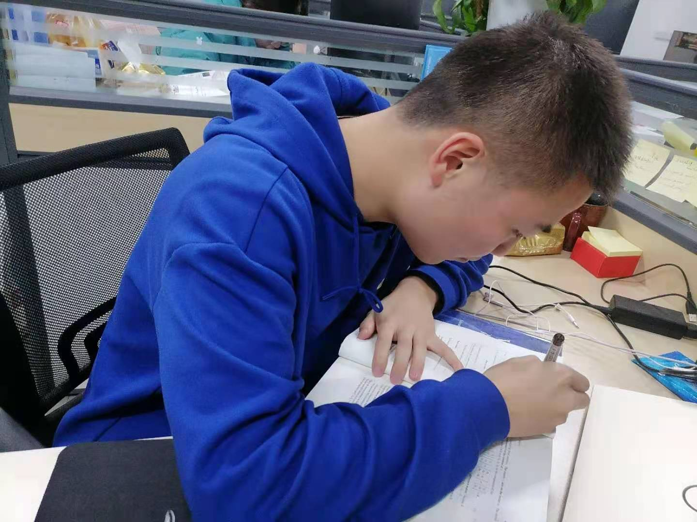
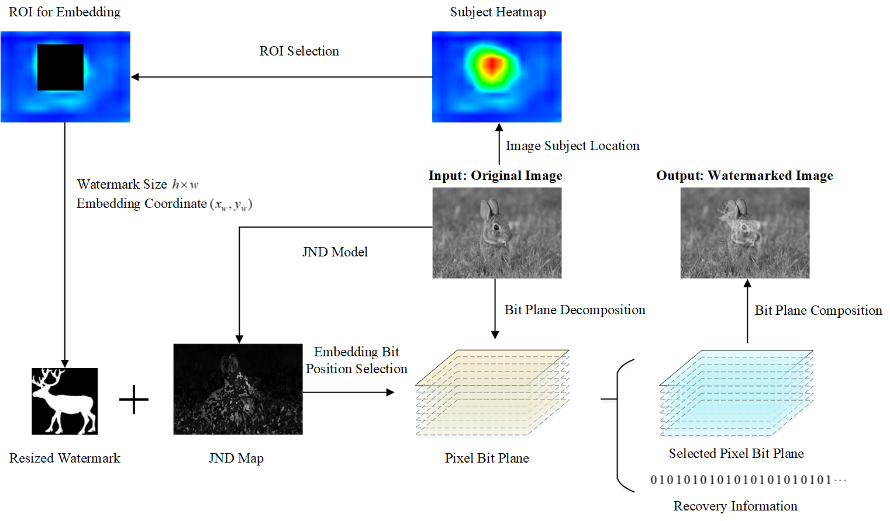

I am a master student studying in the group of i2MEMS at the School of Integrated Circuit and Electronics, Beijing Institute of Technology. And my advisor is Prof. Huikai Xie (IEEE and SPIE Fellow). Now, I mainly focus on the work about 3D vision based on MEMS mirror system. Before that, I received my Bachelor degree from the School of Information Engineering, Minzu University of China.
My primary research interests include 3D vision based on MEMS mirror system and MEMS mirror detection and applications.

A Novel Improved Reversible Visible Image Watermarking Algorithm Based on Grad-CAM and JND
Security and Communication Networks, 2021
Jiasheng Qu, Wei Song, Xiangchun Liu, Lizhi Zhao, and Xiaobing Zhao
Link /
Code /
Video